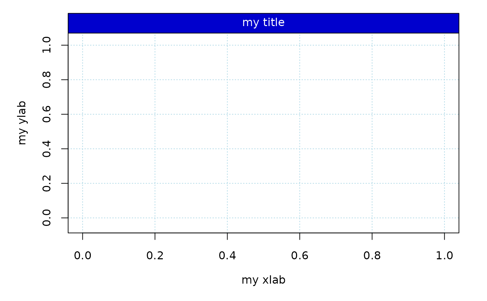
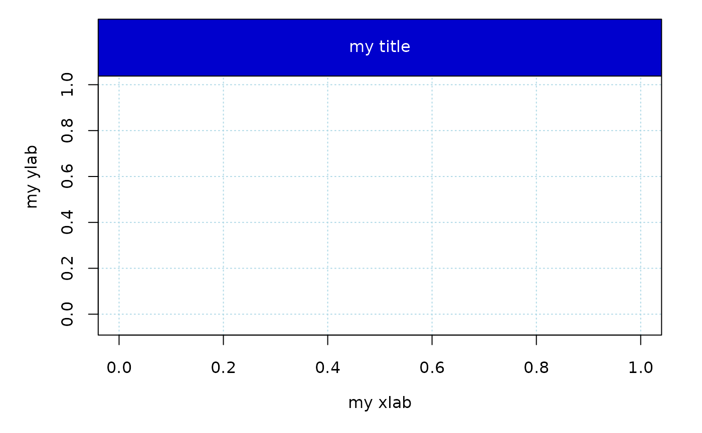
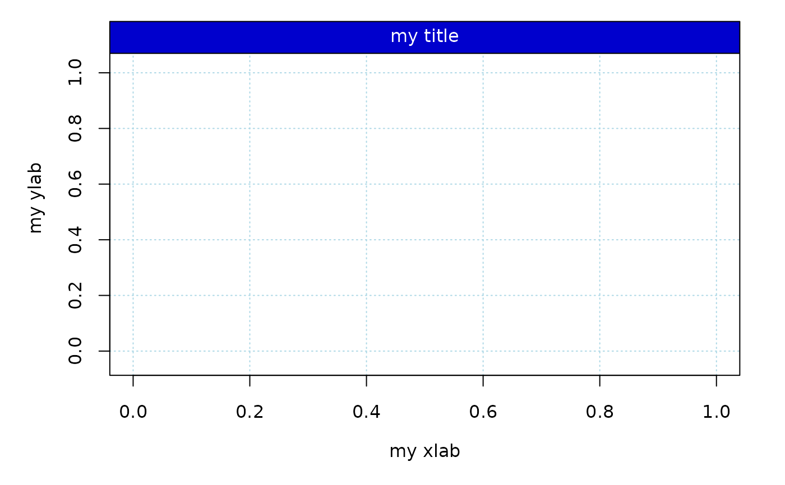
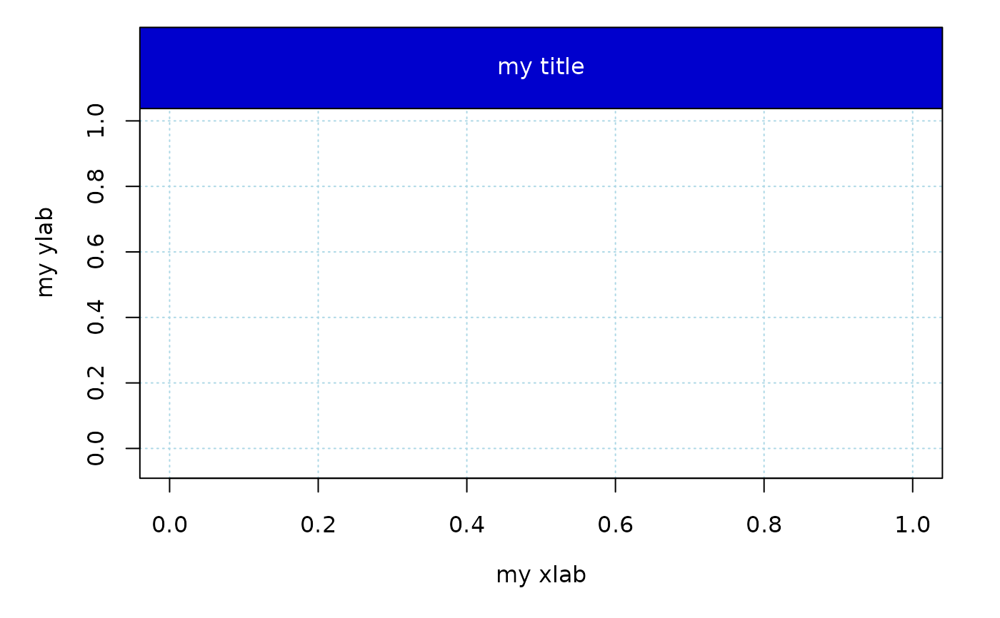

Adds title, grid, and required x- and y-axes.
make_frame(
x_range,
y_range,
xlab,
ylab,
main = "",
mar = c(5.1, 5.1, 1, 2.1),
add_axis_x = TRUE,
add_axis_y = TRUE,
col_box = "black",
col_grid = "grey95",
col_band = "grey95",
col_title = "black",
add_band = TRUE,
title_band_width = 0.09,
grid_lty = 1
)Arguments
- x_range
A
numericproviding the range of values for the x-axis.- y_range
A
numericproviding the range of values for the y-axis.- xlab
A
stringthat gives a title for the x-axis.- ylab
A
stringthat gives a title for the y-axis.- main
A
stringthat gives an overall title for the plot. Default is an empty string.- mar
A
vectorindicating overall margin values for the plot.- add_axis_x
A
booleanindicating whether a x-axis should be added.- add_axis_y
A
booleanindicating whether a y-axis should be added.- col_box
A
stringindicating the color for the title box.- col_grid
A
stringindicating the color of the grid for the plot.- col_band
A
stringindicating the color of the band.- col_title
A
stringindicating the color of the plot title.- add_band
A
booleanindicating whether there should be a band.- title_band_width
A
doubleproviding the value of the band width. Default is 0.09.- grid_lty
A
integerindicating the line type of the grid lines.
Value
Added title, grid, and axes.
Examples
make_frame(x_range = c(0, 1), y_range = c(0, 1), xlab = "my xlab",
ylab = "my ylab", main = "my title")
 make_frame(x_range = c(0, 1), y_range = c(0, 1), xlab = "my xlab",
ylab = "my ylab", add_band = FALSE)
make_frame(x_range = c(0, 1), y_range = c(0, 1), xlab = "my xlab",
ylab = "my ylab", add_band = FALSE)
 make_frame(x_range = c(0, 1), y_range = c(0, 1), xlab = "my xlab",
ylab = "my ylab", main = "my title", col_band = "blue3",
col_title = "white", col_grid = "lightblue", grid_lty = 3)

make_frame(x_range = c(0, 1), y_range = c(0, 1), xlab = "my xlab",
ylab = "my ylab", main = "my title", col_band = "blue3",
col_title = "white", col_grid = "lightblue", grid_lty = 3,
title_band_width = 0.18)

make_frame(x_range = c(0, 1), y_range = c(0, 1), xlab = "my xlab",
ylab = "my ylab", main = "my title", col_band = "blue3",
col_title = "white", col_grid = "lightblue", grid_lty = 3)

make_frame(x_range = c(0, 1), y_range = c(0, 1), xlab = "my xlab",
ylab = "my ylab", main = "my title", col_band = "blue3",
col_title = "white", col_grid = "lightblue", grid_lty = 3,
title_band_width = 0.18)
